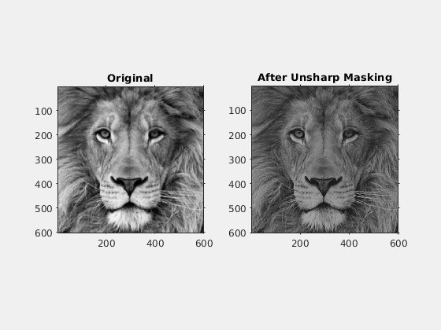
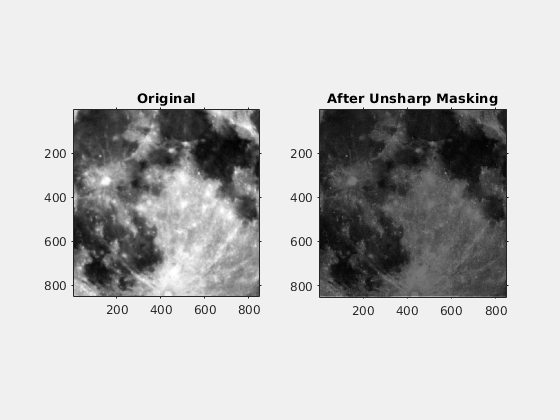

UNSHARP MASKING OF IMAGES
- Performing Unsharp Masking on the given two images.
- Convolve the blurred image with a gaussian mask.
- Then, add the negative of this image with the original image. Scale this "unsharp mask" and add it back to the original image.
Contents
PARAMETERS FOR THE FUNCTION
- Standard deviation of the gaussian = std
- Size of the gaussian filter = fs
- Scaling factor = s
Image - lionCrop.mat
- Standard deviation of the gaussian = std = 7
- Size of the gaussian filter = fs = 5 (5 X 5 matrix)
- Scaling factor = s = 2

Image - superMoonCrop.mat
- Standard deviation of the gaussian = std = 8
- Size of the gaussian filter = fs = 8 (8 X 8 matrix)
- Scaling factor = s = 2
